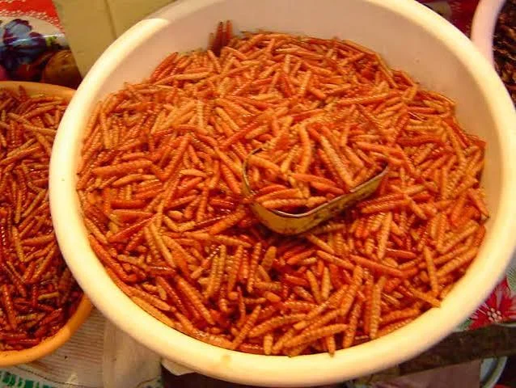

Los chinicuiles son las larvas de una mariposa nocturna (Comadia redtenbacheri) que se desarrollan dentro del maguey, y son uno de los insectos comestibles más apreciados de la gastronomía mexicana, junto con los famosos "gusanos de maguey" blancos (que en realidad son otra especie, Aegiale hesperiaris).
a diferencia del gusano blanco de maguey, los chinicuiles son de color rojo intenso, lo que los hace muy vistosos en los platillos. Hábitat: viven dentro de las pencas y raíces del maguey (agave), especialmente en zonas como Hidalgo, Tlaxcala, Puebla, Oaxaca y el Estado de México. Temporada: se recolectan principalmente entre los meses de julio y agosto, ya que es cuando alcanzan su tamaño óptimo antes de convertirse en mariposas. Sabor y textura: tienen un sabor terroso, ligeramente picante y una textura crujiente al freírse.
Cómo preparar chinicuilesAlto valor proteico: aportan proteína de buena calidad, comparable en algunos casos a la de la carne Bajo en grasas: en relación con su aporte proteico, contienen niveles moderados de grasa Minerales esenciales: buena fuente de hierro y zinc, útiles para la salud sanguínea e inmunológica Alternativa sostenible: su producción genera menos emisiones y requiere menos agua y tierra que la ganadería tradicional Aporte energético: ideales como complemento alimenticio en comunidades rurales Revalorización cultural: su consumo fortalece la identidad y las tradiciones gastronómicas mexicanas

Página secundaria